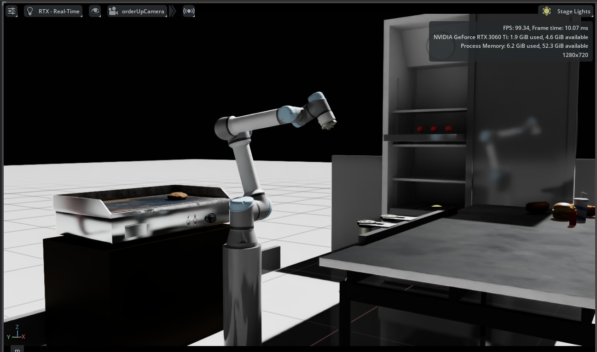
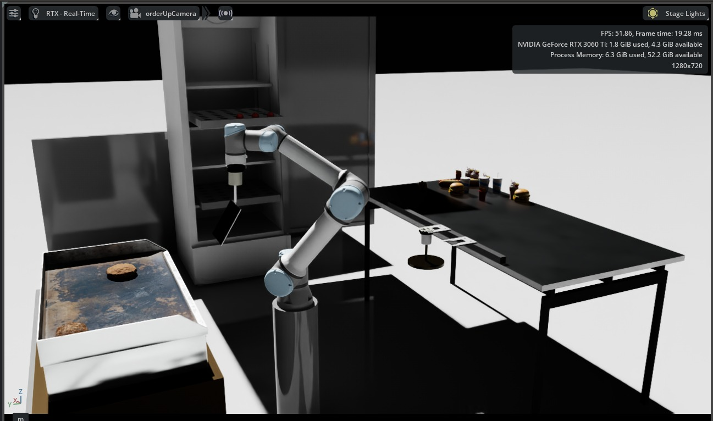
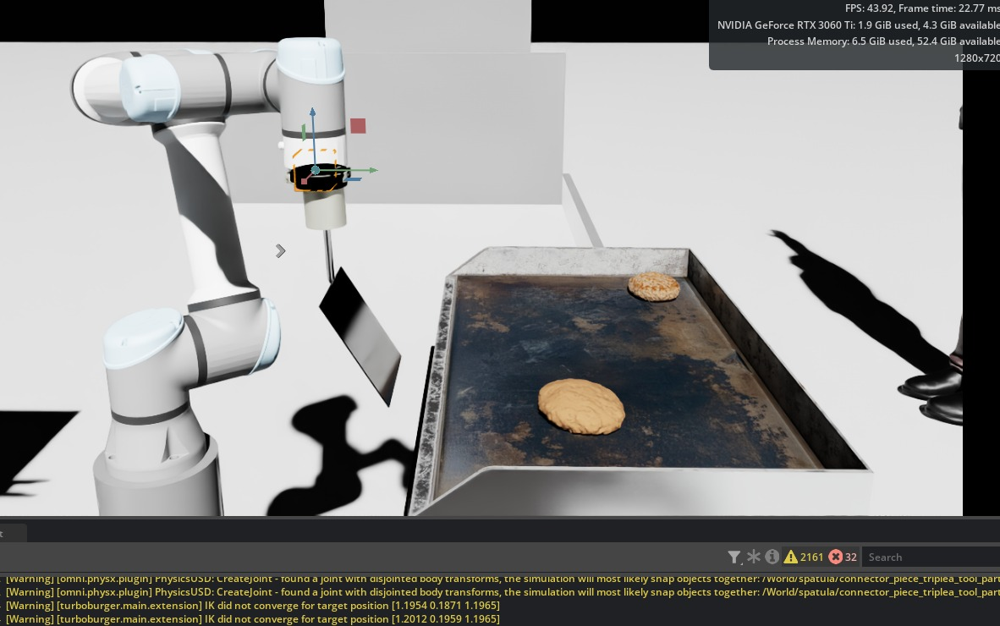

A Universal Robots UR5e version, staged with procedural patty geometry and a deterministic Isaac Sim control loop. The workcell picks, places, smashes, cooks, and flips a patty without leaving one Python process.
One UR arm. Three end-effectors. A stove in front, a handoff plane behind, and a perception loop that watches the patty cook in real time. Every component runs in a single Python process inside Isaac Sim — no network hops, no external bus.
USD scene with the arm centered, stove in front, handoff plane behind. Spawn points for buns, patties, and toppings.
A Python sampler walks the patty material through a color ramp — raw → browned → done — and emits a readiness flag.
An FSM commands arm motion and end-effector swaps in response to readiness events. The recipe order stays deterministic.
A patty,
cooked in sim.
Communication between layers is in-process state, not a message bus. The simulator holds ground truth; perception summarizes it; the controller acts. Everything lives behind Isaac Sim's embedded Python.
recipe_runner.py · end_effector_manager.py
patty_state.py
scene_loader.py · USD scene · OmniGraph
The turntable above is a visual scroll moment, not a state visualizer. The actual controller advances through this fixed recipe order, with the smash step happening immediately after the patty lands on the stove.
Isaac Sim captures from the final workcell, plus the presentation walkthrough for grading and review.
Short path to the narrated demo, setup, control loop, and current limitations.



A senior project group at Kennesaw State University. Roles overlapped, but each member owned a slice of the system end-to-end.
Architecture, scene assembly, project website.
Perception, FSM, final report.
End-effector manager, integration tests.